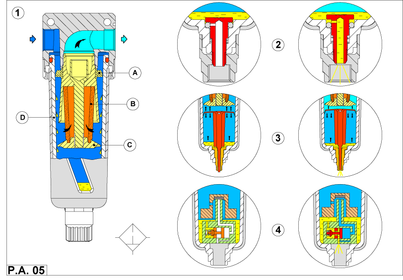
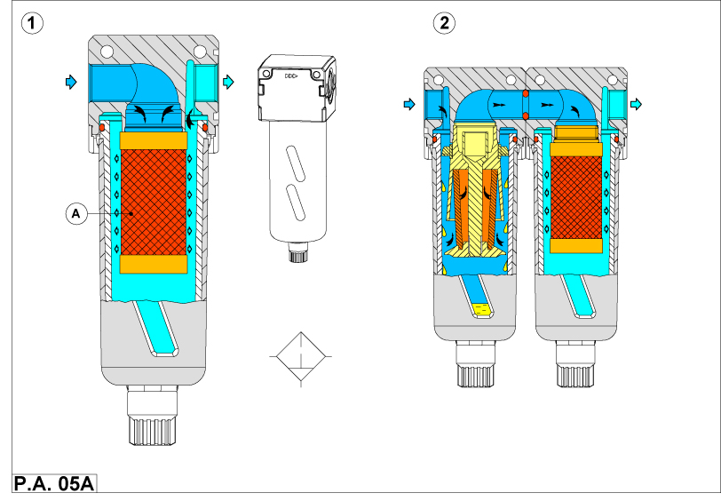

К загрязнениям воды и твердых частиц может быть добавлено некоторое количеств загрязненного масла, которое попадает из компрессора. Трудно удалить все примеси из сжатого воздуха прежде, чем он заполнит пневмосеть. Трубы в сети могут также вносить свой вклад в проблемы из-за отложений на внутренних стенках металлической трубы. Поэтому необходимо установить

Рис. P.A.05 - 1
Сжатый воздух проходит во входное отверстие фильтра и достигает отражателя A. Этот компонент
вынуждает воздух циркулировать вокруг, поскольку он течет через лопатки типа турбины. Жидкие и твердые частицы воздушного потока
вынуждены ударяться о внутреннюю стенку стакана фильтра D, соединяться вместе, и капать к основанию стакана.
Воздух проходит через элемент фильтра B, который предотвращает проход большой порции загрязнений,
все еще находящихся в воздухе. Элемент часто выполняется из спеченных бронзовых шариков. Пористость такой сетки может быть задана при ее изготовлении.
Глушитель С отделяет "турбулентную" зону, созданную центробежным эффектом отражателя, от "ламинарной"
зоны, где осаждаются загрязнения. Разделение двух зон предотвращает повторное возвращение примесей в воздушный поток.
Существуют три типа устройств слива, монтируемые в стакане фильтра D.

Фильтр должен регулярно разбираться, а его элемент очищаться или заменяться.
Использование металлических стаканов со смотровым стеклом считается сейчас лучшей практикой, поскольку пластмассовые стаканы могут быть
разрушены промышленными растворителями или из-за ударов. Это разрушение может привести к травме.